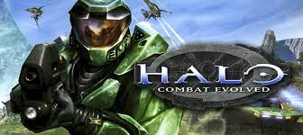
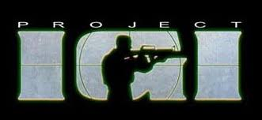
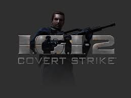

Halo: Combat Evolved is a 2001 military science fiction first-person shooter video game developed by Bungie and published by Microsoft Game Studios. It was released as a launch title for Microsoft's Xbox video game console on November 15, 2001.[2] Microsoft released versions of the game for Microsoft Windows and Mac OS X in 2003. The game was later released as a downloadable Xbox Original for the Xbox 360.[6] Halo is set in the twenty-sixth century, with the player assuming the role of the Master Chief, a cybernetically enhanced supersoldier. The Chief is accompanied by Cortana, an artificial intelligence. Players battle various aliens as they attempt to uncover the secrets of the eponymous Halo, a ring-shaped artificial world.

Project I.G.I. (released in North America as Project I.G.I.: I'm Going In) is a tactical first-person shooter video game developed by Innerloop Studios and released on December 15, 2000 by Eidos Interactive.[1] Upon release the game received mixed reviews due to a number of shortcomings, including poorly programmed A.I., lack of a mid-game save option, and the lack of multiplayer features. However it was praised for its sound design and graphics, thanks in part to its use of a proprietary game engine that was previously used in Innerloop's Joint Strike Fighter.

I.G.I.-2: Covert Strike is a tactical shooter computer game developed by Innerloop Studios and released by Codemasters in 2003. The game is a stealth-based first person shooter. It is the sequel to Innerloop's Project I.G.I.. The original, published by Eidos Interactive, offered only single-player play, and no game saves. Covert Strike added multiplayer play and limited save game capability. Chris Ryan, a former Special Air Service operative best known for being the lone successful escapee of Bravo Two Zero, served as a consultant to the game. The game's plot features a rogue Chinese General, "Wu Xing" as the primary antagonist. Xing orchestrates various events (such as armed robbery of advanced prototype technology from the Russian mafia) in order to get electromagnetic pulse (EMP) weaponry on a space rocket that he has launch control over. The game was banned in China after six months of sales (having passed censor inspection with an incomplete copy of the game that lacked the final six levels of Chinese content), because it was perceived to damage the Chinese army's image.